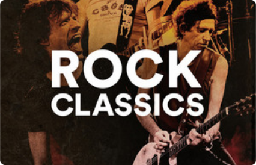
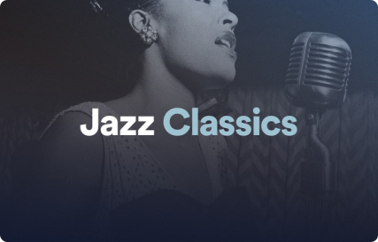

Playlists
Aqui você encontrará uma seleção especial de playlists curadas para celebrar o Dia Internacional da Música. Cada playlist foi cuidadosamente montada para destacar diferentes gêneros musicais, proporcionando uma experiência auditiva única e diversificada. Navegue pelas playlists, descubra novos sons e deixe a música ser a trilha sonora do seu dia!
Playlists por Gênero
Pop Internacional 2024
Hits atuais e clássicos que definem o gênero pop.

Rock Classics
Os clássicos do Rock que fazem sucesso até hoje.

Jazz Classics
Uma viagem pelos sons suaves e complexos do jazz.
Eletrônicas
Batidas eletrônicas para animar qualquer ambiente.
Clássicas
Obras-primas da música clássica para relaxar e inspirar.